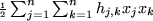
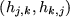
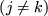
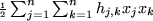
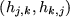
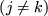
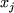
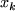

The
QUADRATIC, HESSIAN, QUADS, QUADOBJ or QSECTION
Data Cards
The
QUADRATIC, HESSIAN, QUADS, QUADOBJ or QSECTION
Data Cards
The QUADRACTIC, HESSIAN,
QUADS1,
QUADOBJ2and
QSECTION3indicator cards are used interchangeably
to announce any nonzero coefficients  in the quadratic
objective group
.
Only one of each pair
, ,
of ``off-diagonal'' terms should be given,
but which is unimportant. Any repeated coefficients will be summed.
The syntax for data following these indicator cards
is given in Figure 3.15.
in the quadratic
objective group
.
Only one of each pair
, ,
of ``off-diagonal'' terms should be given,
but which is unimportant. Any repeated coefficients will be summed.
The syntax for data following these indicator cards
is given in Figure 3.15.
The strings varbl-name in data fields 2 and 3 (and optionally 2 and 5
for those cards whose field 1 does not contain Z)
give the names of pairs of problem variables  and
 for which  is nonzero.
All problem variables must have been previously set in the
VARIABLES/COLUMNS section. Additionally, on a Z card,
the name of the variable must be an element of an array
of variables, with a valid name and index, while on a X card,
the name may be either a scalar or an array name.
is nonzero.
All problem variables must have been previously set in the
VARIABLES/COLUMNS section. Additionally, on a Z card,
the name of the variable must be an element of an array
of variables, with a valid name and index, while on a X card,
the name may be either a scalar or an array name.
On cards whose field 1 is either empty or contains the character
X, the strings numerical-vl in data fields 4 and (optionally) 6
contain the associated numerical values of the coefficients
 . On cards for which field 1 contains the character
Z, the string r-p-a-name in data field 5 gives a real
parameter array name. This name must have been previously defined and
its associated value then gives the numerical value of the parameter.
. On cards for which field 1 contains the character
Z, the string r-p-a-name in data field 5 gives a real
parameter array name. This name must have been previously defined and
its associated value then gives the numerical value of the parameter.